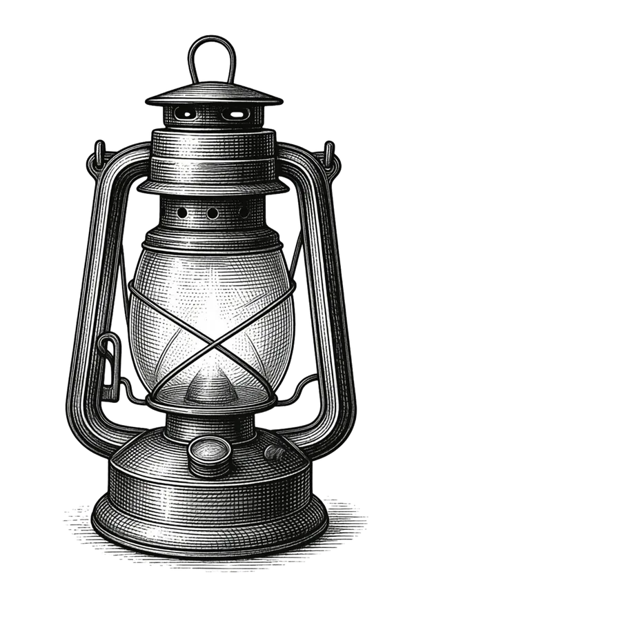
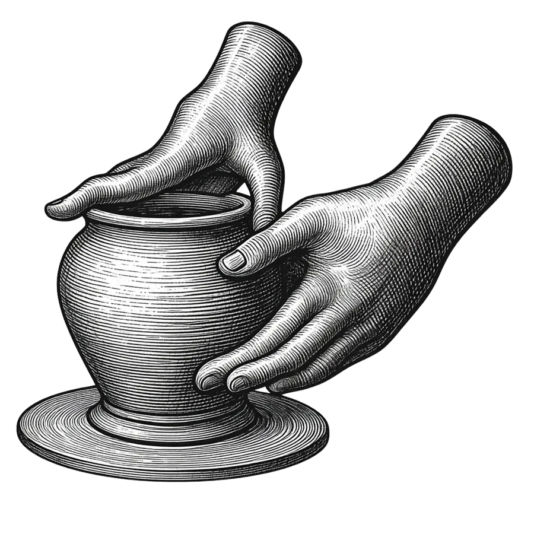
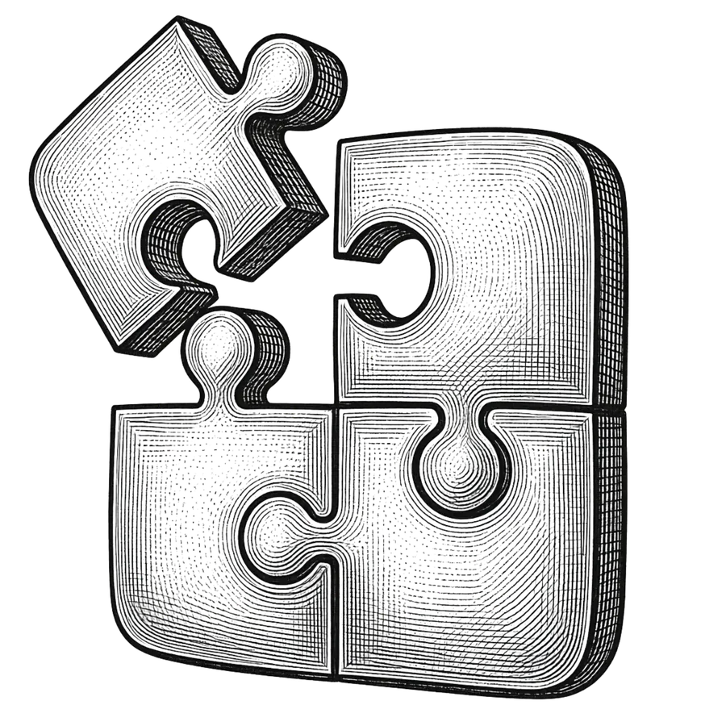
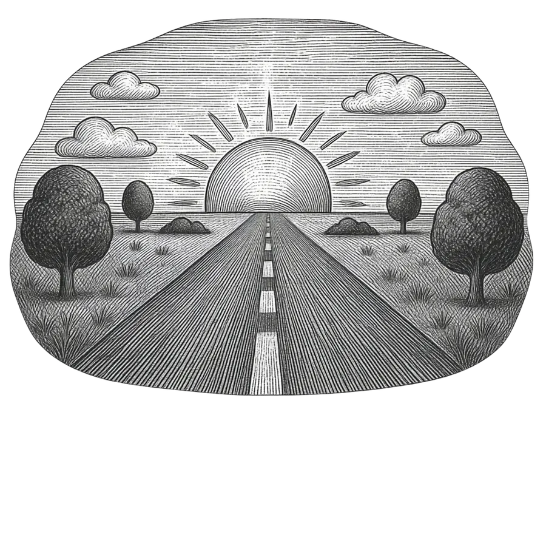

Vous vous demandez
à quoi ressemble vraiment
le métier de correcteur ?
Ici, vous n’avez rien à réussir.
Vous n’avez même pas besoin de savoir exactement pourquoi vous êtes là.
La curiosité suffit.
Vous n’avez rien à acheter.
Pas de bonne réponse à trouver.
Vous vous demandez déjà si vous pourriez devenir correcteur ?
On s’en fiche, pour l’instant.
Venez voir.
Pas de décision à prendre.
Et voir ce que ça vous fait.
Pas de niveau à prouver.
Regarder. Fouiller. Essayer. Se tromper. Chercher. Corriger. Sourire. Douter. Découvrir.
Entrez dans l’immersion
VOUS
ÊTES
LIBRE.
Vous entrez avec votre prénom, votre adresse e-mail… et surtout votre curiosité.
Rien à payer. Rien à réserver. Pas de coordonnées bancaires. Aucune obligation. Votre adresse ne vous sert qu’à plonger dans l’immersion. Après, on ne s’en sert plus et on ne vous demande rien.
Vous découvrez, vous explorez, vous essayez le métier par vous-même.
Et c’est tout.
Plongez
dans le
métier.
Certains métiers se comprennent mal de l’extérieur, demeurent inaccessibles et mystérieux. Il n’existe qu’un seul chemin vers la correction : il faut l’approcher, l’écouter, la manipuler un peu – et voir ce qu’elle réveille en soi. C’est précisément ce que cette immersion vous propose.
-

Voir
Vous allez pouvoir observer le métier de près, à la loupe.
Suivre le parcours d’un texte de son écriture à sa parution.
Repérer quand et comment intervient le correcteur, et ce qu’il fait des textes qui lui sont confiés.
Avec qui il travaille, aussi – car, non, il n’œuvre pas tout seul et interagit avec une vaste chaîne qui s’applique à mettre des livres au monde.
À quels types de livres il contribue… dont sûrement beaucoup que vous ne soupçonniez pas.
Et puis ses questionnements, ses recherches, ses doutes, et ce qui se passe concrètement entre le manuscrit qu’il reçoit et le travail qu’il rend à son éditeur.
Entrez dans les coulisses et voyez ce que vit et fait un correcteur au jour le jour, de l’intérieur.
-
Écouter
Lire ce que l’on vous dit, c’est bien ; entendre ceux qui le vivent pour de vrai, c’est mieux. Nous avons donc donné la parole à ceux qui sont en train de l’apprendre ou qui l’exercent déjà – nos élèves actuels et ceux qui sont devenus correcteurs certifiés.
Écoutez-les raconter ce qu’ils faisaient avant de se lancer dans ce métier et pourquoi ils ont choisi de franchir le pas.
Quel était leur niveau avant de commencer, s’ils avaient peur, s’ils se sentaient légitimes ou non.
Pour qui les certifiés travaillent aujourd’hui, et les retours positifs qu’ils en reçoivent.
Ce qu’ils y aiment le plus et qui les épanouit.
Leur vie de tous les jours, leur rythme, leur liberté d’indépendant.
Et ce qu’ils ont eu envie de vous dire, si vous hésitez à vous lancer.
Bien plus rare : des éditeurs, aussi, ont accepté de vous parler de leur métier et de ce qu’ils recherchent et apprécient, dans leurs relations avec les correcteurs.
-

Essayer
Une immersion, c’est une plongée. Mais aucune plongée n’est possible si l’on reste au bord de l’eau à regarder l’horizon.
Prêt à jouer avec les mots et la langue ? À mettre les mains dedans ? À expérimenter, tripatouiller, sentir par vous-même ?
Oui, vous allez corriger… pour le pur et simple plaisir d’essayer – un quiz de langue (retors !) et un texte de fiction, dans lequel vous essaierez de ne pas vous laisser trop happer par Mira Ashvane en quête de la Grande Carte des Souffles à bord de son dirigeable… afin de trouver toutes les erreurs du texte.
Comme un véritable correcteur.
Pas de note, pas d’enjeu, rien d’éliminatoire – juste quelques ressources passionnantes et des conseils de posture pour que votre expérience soit réussie.
Prenez-vous au jeu, confrontez-vous pour de vrai à la langue et faites l’expérience des questions et des doutes qui traversent réellement le correcteur devant toute phrase.
Et sentez ce que ça fait, vraiment, d’être un correcteur.
-

Comprendre
Certaines questions, alors, deviennent plus concrètes.
Suffit-il d’être bon en français ?
Quelles compétences faut-il réellement développer, pour être un bon correcteur ?
Avec quels outils travaille-t-on ?
Trouve-t-on réellement du travail, dans ce métier, et peut-on en vivre ?
Comment trouve-t-on pleinement sa place, dans cet univers ?
Petit à petit, les pièces s’assemblent et le puzzle se construit : vous découvrez un véritable métier, avec ses défis, ses passions, ses potentialités.
-

Se projeter
Et puis vient le questionnement qu’aucune fiche métier ne peut trancher à votre place : qu’est-ce que tout cela provoque chez vous ?
Vos envies, vos hésitations, vos peurs, vos croyances, ce qui vous attire ou vous retient, le plaisir que vous avez pris ou non à chercher, corriger, améliorer par vous-même.
Nous vous y invitons aussi à dépeindre la vie que vous aimeriez bâtir pour vous – votre rapport au temps, au travail, à la liberté… et votre quotidien idéal.
Sans aucune « bonne » ni « mauvaise » réponse, mais simplement… les vôtres.
Ce métier est-il celui que je cherchais ou non ?